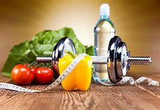
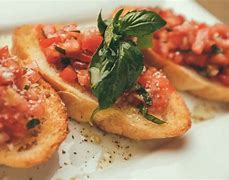
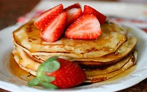
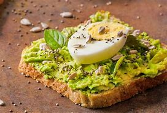

A sobrevivência do ser humano depende de um elemento em especial: sua alimentação.
É da nossa nutrição diária que tiramos as energias necessárias para nossas atividades
básicas e manter todos os órgãos funcionando em harmonia.
Além de oferecer um equilíbrio saudável para os seres humanos em geral, ter uma nutrição
de qualidade e bem definida também é essencial em muitas profissões para atletas, cantores,
atores e outros.
SAÚDE

RECEITAS


DIETA

Como ter uma alimentação saudável?
Para manter o organismo em equilíbrio e em bom funcionamento é imprescindível uma alimentação saudável.
Muito se fala sobre isso, mas afinal, o que é alimentação saudável? Antes de falar sobre isso, lembre-se
que um acompanhamento com o Nutricionista (online ou presencial) é fundamental para chegar aos seus objetivos,
seja ele por emagrecimento ou dúvidas de qual melhor cardápio manter no dia-a-dia.
É claro que às vezes você vai ter aquela vontade de comer um docinho, um bolo, uma torta.
O açúcar, quando consumido em doses menores e com equilíbrio, não irá prejudicar seu plano
alimentar, mas o mais importante é se atentar às quantidades e frequência de alimentos mais
calóricos e gordurosos.